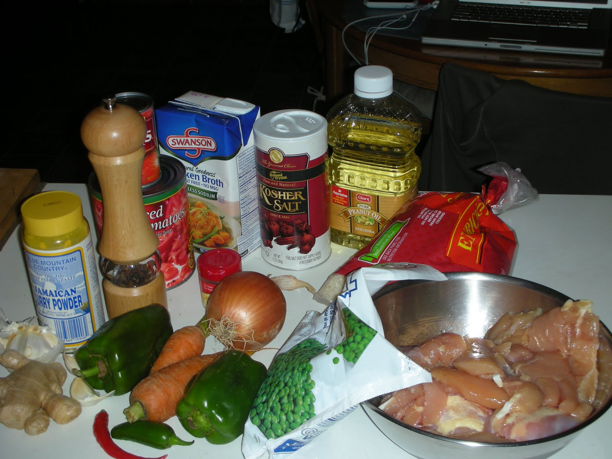

Jollof Rice
A classic West African dish made with rice, tomatoes, and spices. Perfect for parties or family dinners!
Recipe Information
Prep Time: 15 minutes
Cook Time: 45 minutes
Serving: 4
Difficulty: Medium
Ingredient
- 2 cups of long grain rices
- 1/2 cup vegetable oil
- 1 onion (chopped)
- 2 cups of tomatoes (blended)
- 1 tablespoon tomato paste
- 1 teaspoon curry powder
- Salt to taste

Instructions
- Heat oil in a pot and saute onions until soft.
- Add tomato paste and blended tomatoes. Cook for 10 mintues.
- Stir in curry powder and salt.
- Add rice and mix well with the sauce.
- Pour in water, cover, and cook until rice is done
Nutrition Facts
- Calories: 350 per Serving
- Protein: 6g
- Crabs: 45g
- Fat: 15g
Tips
Use chicken stock instead of water for richer flavour.
Let the rice steam on low heat to avoid burning.
Dish Preview

Don't forget to stir occasionally!
Best served hot with fried plantains.
Recipe adapted from KIKIFOODIES.